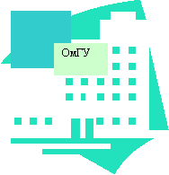
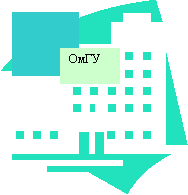

Кильдюшева Алина Анатольевна.
Дата рождения:
09 августа 1982 г.
Откуда родом / где пенаты:
г. Омск
Адреса для связи (mail и телефон):
64-37-48; мой e-mail: kildusheva@mail.ru
Любимый кусочек любимой песни. А так же любимый и не любимый цвета:
Любимые песни: Madonna "Frozen" или "This Used to be my playground".
нравится –
не нравится –
Научный интерес / тема диплома, ФИО научного руководителя:
Тема диплома - "Женщина в социальной структуре первобытного общества"; научный руководитель - Сергей Семёнович Тихонов.
Понимание смысла жизни (зачем топчет эту землю). Понимание большой и чистой любви :
Это довольно сложные вопросы, экзистенциональные, так просто на них не ответишь.
Брак - это продолжение любви или насилие над ней? Как относится к сексу до брака. Сколько хочет детей:
Предлагаете принять участие в ток-шоу "Про это"?
Впечатления об учёбе / последних пяти годах жизни:
Мои впечатления самые разнообразные, но в целом приятные.
Типичное "телорасположение" последних пяти лет жизни:
Впечатление от курса:
см. выше.
Любимая вредная привычка:
Моя любимая вредная привычка - опаздывать, вот если бы у меня было 10-15 минут запасных…..
Как воспринимает себя:
Вот так я себя и воспринимаю, в последнее время …
 

О чём жалет, что сделала / не сделала за эти пять лет:
Того, что не сделала / сделала за эти пять лет, уже не вернёшь и не исправишь, поэтому что сожалеть об этом - надо жить дальше!
Главная слабость (перед чем не может устоять):
Не могу устоять перед очередным кусочком.
Планы (не больше трёх страниц :)
Учиться, учиться и ещё раз учиться в прямом и переносном смысле слова.
Пожелания сокурсникам:
Желаю всем своим сокурсникам после выпуска не смотря ни на что не забыть, кто такой Геродот и чем он прославился, и что мы все причастны к его делу!!!!!!!!!!!!!! Как говорится "вперёд, к Геродоту", историки!!!!!!!!!!!!!
Алина.